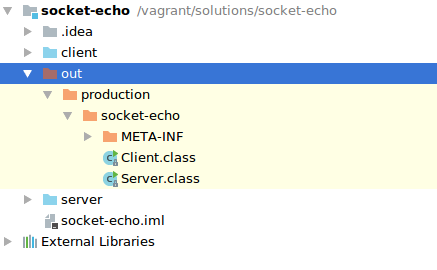
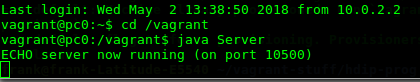
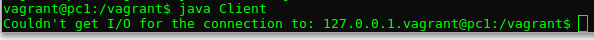
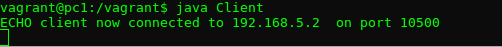
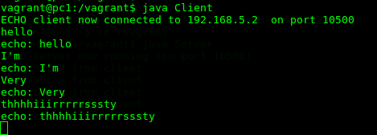
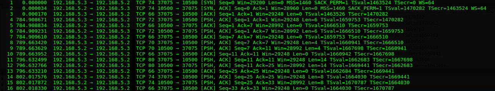
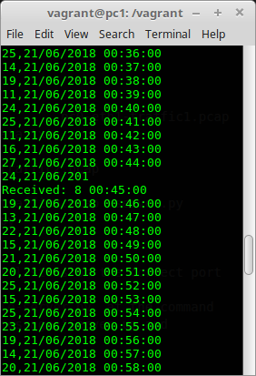
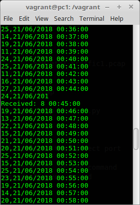
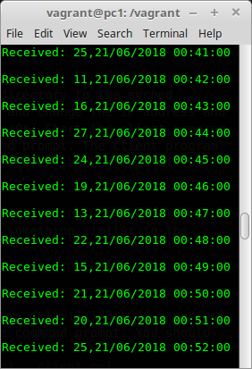

TCP Sockets
This lab explores Transport layer protocols.
Objectives
- Set up a TCP/IP socket client/server in your virtual network.
- Use TShark to filter and record TCP traffick.
- Analyse recorded TCP data and observe TCP protocol features.
- Modify TCP client to connect to remote TCP socket server.
- Observe and understand TCP packets.
Introduction
In this lab you will download a TCP client and server program written in Java and Python by cloning a repository. The Java and Python code may be incomplete or contain bugs, but your knowledge of sockets and Java should enable you to produce a working version. To test your client/server programs, you will compile the code and place it in the shared vagrant directory of the virtual network from the last lab. This will make them available in each of the virtual machines in the /vagrant directory.
Java sockets program
Clone the following repo into a suitable location on your machine:
https://github.com/wit-computing/hdip-socket-to-me.git
The cloned repo is an IntelliJ project. Start IntelliJ and do File->Open and select the repo directory.
The sockets project contains two Java programs, a simple Sockets Server and Client. Take a look at Server.java in the editor. Although you have covered all of the Java concepts shown in this program (such as threads...) you should be able to inspect the code and have a reasonable idea how the program will behave when executed. Answer the following: + What port number will the server bind to? + What statement actually binds the program to the port? + Notice that there is plenty of code for handling IOException. From a networking perspective, Why do you think this is required?
You will now deploy the sockets Server to PC0. One way to do this is to copy the compiled byte code (i.e. Server.class) to the shared vagrant directory on your laptop. In IntelliJ, select the socket-echo project anb then select Build->Build Project. This will make sure the project is compiled to the out directory.

Copy the Server.class and Client.class files to your shared Vagrant directory. Now start the Vagrant virtual environment as usual by opening a terminal window in you Vagrant directory and entering vagrant up.
As before, open a SSH session with PC0.Change directory to the /vagrant folder and run the Server from the commandline:

Now, open a session on pc1 and run the client. Something's wrong! Client.java compiles but it does not connect to the server. You should see something similar to the following.

You will need to figure out why the client failed. Have a look at the code and keep in mind that, in order for the client to connect to a socket, it needs the correct IP address and port that the Server is listening on. Fix the issue and run the Client program again. If you fix it, you should see the following:

Start to enter some text in the Client terminal and hit Return/Enter. You should see the text echoed back to you from the server on pc0. This is using TCP/IP protocol to do this. Lets have a look at how this looks "on the wire" using TShark.
Optional Challenge
In your programming module, you created a "tech support" program that generated automated responses based on requests. If you have time, why don't you try to reuse the tech support code to make the Server behave the same way (and not just echo every request).
TCP/IP
So we have a client/server connection over TCP/IP sockets. Now lets start recording network traffic and examin the TCP/IP interaction:
Disconnect your client program running on pc1 by entering ctrl+c in the SSH session.
Start another SSH session with pc0 and start TShark recording on interface eth1 and filter on port 10500(i.e. the port our server program is using):
~$ tshark -w /vagrant/pc0-eth0-traffic3.pcap -i eth1 -f "tcp port 10500"Now connect to the server using the client program again and send a few lines of text: 
You should have some network traffic data recorded in /vagrant/pc0-eth0-traffic3.pcap. As before, lets open the file and have a look using tshark -r pc0-eth0-traffic3.pcap. You should see similar output to the following:

Have a look at the data and answer the following question:
+ Can you locate the TCP 3-way handshake. How many times does it happen.
+ What's the port number of the client? Why is it this number?
+ Disonnect and connect the client again and have a look at the client port number and 3-way handshake. What happens?
+ As you see, the TCP connection is negotiated at each connection, thereafter transmission can commence.
+ Have a closed look at the data that's transmitted. Pick a "push" frame(one with [PSH,ACK] flag it'll contain data) and inspect the encapsulation:
$ tshark -r pc0-eth0-traffic3.pcap -V -Y "frame.number==12"
Frame 12: 80 bytes on wire (640 bits), 80 bytes captured (640 bits) on interface 0
Interface id: 0 (eth1)
Encapsulation type: Ethernet (1)
. . . . . .
Transmission Control Protocol, Src Port: 10500, Dst Port: 37075, Seq: 11, Ack: 25, Len: 14
Source Port: 10500
Destination Port: 37075
[Stream index: 0]
[TCP Segment Len: 14]
Sequence number: 11 (relative sequence number)
[Next sequence number: 25 (relative sequence number)]
Acknowledgment number: 25 (relative ack number)
Header Length: 32 bytes
Flags: 0x018 (PSH, ACK)
000. .... .... = Reserved: Not set
...0 .... .... = Nonce: Not set
.... 0... .... = Congestion Window Reduced (CWR): Not set
.... .0.. .... = ECN-Echo: Not set
.... ..0. .... = Urgent: Not set
.... ...1 .... = Acknowledgment: Set
.... .... 1... = Push: Set
.... .... .0.. = Reset: Not set
.... .... ..0. = Syn: Not set
.... .... ...0 = Fin: Not set
[TCP Flags: ·······AP···]
. . . . . . .
Data (14 bytes)
0000 72 65 61 6c 6c 79 20 72 65 61 6c 6c 79 0a really really.
Data: 7265616c6c79207265616c6c790a
[Length: 14]- Have a look at the TCP and Data section of the Frame. Notice how the Flags past of the datagram indicates what type of transmission it is.
- How can the same datagram act as an Acknowledgement and a Push?
- How does the raw data translate into the text sent? Id this data "safe" during Transmission?
TCP/IP Packets
The objective in this section is to demonstrate:
- TCP is stream-orientated
- Packetisation of streamed data.
To do this you will modify the TCP client connect to a different TCP server in the cloud(or create it on your Pi if you have it already).
Smart Environment Scenario:
Let’s assume we have a remote sensor device as part of a smart environment infrastructure for monitoring temperature at several locations. The remote sensor device (the TCP server) waits for a request from a data aggrigator(the TCP client) for data. It behaves as follows: + On receiving a message from the data aggrigator, the remote device sends n sensor values, in this case the temperature. + The server closes the connection after sending the n messages. + The aggrigator(client) does not know the value of n before the request is made. + The request from the aggrigator is a value indicating the time period between transmitting each sensor reading. The value, in seconds, is given as a command line argument to the client. + If no time is specified, the server will try to send all n values at the same time.
Starting the Server
On PC0, change directory to the synced /vagrant folder and open the server.py using nano.
vagrant@pc0:~$ cd /vagrant
vagrant@pc0:/vagrant$ ls
Client.class Server.class client.py pc0-eth1-traffic1.pcap
Client.java Server.java lots-of-data.txt pc0-eth1-traffic2.pcap
HelloWorld.class Vagrantfile pc0-eth0-traffic2.pcap pc0eth1traffic1.pcap
HelloWorld.java bootstrap.sh pc0-eth0-traffic3.pcap server.py
vagrant@pc0:/vagrant$ nano server-simple.pyUpdate the server code so that your server listens on the correct port (i.e. 50200).
Now run the server by typing python simple-server.py at the command prompt. All going well, you should see a message "Server up and running..."
vagrant@pc0:/vagrant$ python server-simple.py
Server up and running...Running the Client
Open a SSH session with pc1 and change directory to the syched folder. Using nano, have open client.py and change the IP address and port number to connect to the server on pc0. Start the client program by typing python client.py at the command prompt. The client program takes one arguement which is time period between sending each of the n sensor values back to the client.
On pc1, run the client with 0 time delay by typing python client.py 0 at the command prompt. You should see something similar to the following: 

Now, on pc1, run the client with 0.01 time delay(1/100th of a second) by typing python client.py 0.01 at the command prompt. You should see something similar to the following:
Notice the difference in the output of client.py program for 0 delay and 0.01. Taking into account of what was discussed in class:
+ what are the possible reasons for the differing output?
+ what do you think is happening with the TCP packets.
To try and make sense of what's going on at a network level, lets repeat the above exercise except this time we'll capture and analyse some tcp network data on the client side.
Open another terminal window and connect to pc1 using SSH(you should have two ssh sessions with pc1 open now). Run TShark to filter on port 50200 with a payload greater than 0. We'll listen on interface eth0 and write the data to a file. We'll capture everything so no filters.
tshark -i eth1 -w pc0-eth1-tcp-sensor.pcapNow run the python client.py 0 to capture the network traffic for 0 delay.
vagrant@pc1:/vagrant$ python client.py 0
Sent: 0
Received: 25,21/06/2018 00:00:00
Received: 25,21/06/2018 00:01:00
12,21/06/2018 00:02:00
16,21/06/2018 00:03:00
...Stop tshark by entering ctrl-c in the network capure session and restart it but this time write the results to pc0-eth1-tcp-delay.pcap
tshark -i eth1 -w pc0-eth1-tcp-0-delay.pcap -f "src port 50200" -T fields -e frame.number -e frame.len -e ip.len -e tcp.len -E header=yNow run the python client.py 0.01 to capture the network traffic for 0 delay.
vagrant@pc1:/vagrant$ python client.py 0.01
Sent: 0.01
Received: 25,21/06/2018 00:00:00
Received: 25,21/06/2018 00:01:00
Received: 12,21/06/2018 00:02:00
...Finally, repeat the proceedure for writing all the data in one go.
vagrant@pc1:/vagrant$ python client.py
Sent:
Received: 25,21/06/2018 00:00:00
25,21/06/2018 00:01:00
12,21/06/2018 00:02:00
16,21/06/2018 00:03:00
...Lets examine the captured data. We can use the -Y (Yank filter) to query specific aspects of the data and filter based on field names. As all the data is in the same file, we need a way to query the specifics for each of the 3 scenarios. One way to do this for the first experiment is to look for the frame that contains each request. For the experiments, you know that the payload(data) of the tcp request from the client to tcp port 50200 was "0", "0.01" and null(nothing) in that order so lets look for that:
vagrant@pc1:~$ tshark -r pc0-eth1-tcp-sensor.pcap -o data.show_as_text:TRUE -T fields -e frame.number -e data.text -E header=y -Y "tcp.len>0 && tcp.dstport==50200"
frame.number data.text
7 0
53 0.01
460So, from the above data you can identify the frame number of each of the requests. Thus the tcp reponses for each request lie between each frame. So for the reuest for 0 delay the responses will have a frame numbet in the range 8-52. So lets look at the the tcp packets with a source port of 129.168.5.2, port 50200 in that range:
frame.number ip.src tcp.len
8 192.168.5.2 0
9 192.168.5.2 24
11 192.168.5.2 336
12 192.168.5.2 1448
15 192.168.5.2 400
17 192.168.5.2 144
19 192.168.5.2 360
21 192.168.5.2 120
23 192.168.5.2 168
25 192.168.5.2 312
27 192.168.5.2 96
29 192.168.5.2 192
31 192.168.5.2 312
33 192.168.5.2 96
35 192.168.5.2 72
37 192.168.5.2 72
39 192.168.5.2 96
41 192.168.5.2 192
43 192.168.5.2 288
45 192.168.5.2 48
47 192.168.5.2 0
49 192.168.5.2 0
51 192.168.5.2 0From the above, I can see that 23 tcp packets were required to recieve the data at the clients (19 to transfer the data). This will be different every time you run it.
Lets run the same query for the 2nd experiment where delay was set to 0.01 seconds for each transmission.
vagrant@pc1:~$ tshark -r pc0-eth1-tcp-sensor.pcap -o data.show_as_text:TRUE -T fields -e frame.number -e ip.src -e tcp.len -E header=y -Y "tcp.srcport==50200 && frame.number>53 && frame.number<460"
frame.number ip.src tcp.len
54 192.168.5.2 0
55 192.168.5.2 24
57 192.168.5.2 24
59 192.168.5.2 24
...
446 192.168.5.2 24
448 192.168.5.2 24
450 192.168.5.2 24
452 192.168.5.2 24
454 192.168.5.2 0
456 192.168.5.2 0
458 192.168.5.2 0You can see that far more tcp packets are used to trasport the data to the client. If we include the tcp.data field to have a look at the payload, you will see there's a tcp packet for each sensor value. This is due to the delay and the way the server program works.
Finally, lets run a query to look at the big bang approach to send all the data at once.
vagrant@pc1:~$ tshark -r pc0-eth1-tcp-sensor.pcap -T fields -e frame.number -e ip.src -e tcp.len -E header=y -Y "tcp.srcport==50200 && frame.number>460"
frame.number ip.src tcp.len
461 192.168.5.2 0
462 192.168.5.2 14480
464 192.168.5.2 9519
466 192.168.5.2 0
468 192.168.5.2 0
vagrant@pc1:~$You can see here that the data is now transferred in 5 tcp packets. Notice that the data is split into 2 packets for transission in this case. + Why do you think this happens? + Where does the split happen, in the server program or in the tcp stack?
Lets change the query to have a look at what the payload looks like for a data carrying frame, number 462 (you'll have to scroll up to have a look at it:
vagrant@pc1:~$ tshark -r pc0-eth1-tcp-sensor.pcap -o data.show_as_text:TRUE -T fields -e frame.number -e ip.src -e tcp.len -e data.text -E header=y -Y "frame.number==464"
frame.number ip.src tcp.len data.text
464 192.168.5.2 9519 6/2018 10:03:00
18,21/06/2018 10:04:00
19,21/06/2018 10:05:00
25,21/06/2018 10:06:00
...You can see that the payload has been broken up into 2 packets. The data in the above example begins with a partial sensor reading (the rest of it is in frame 462) followed by other readings. This data will be reassembled in the TCP/IP stack before being delivered to the application.